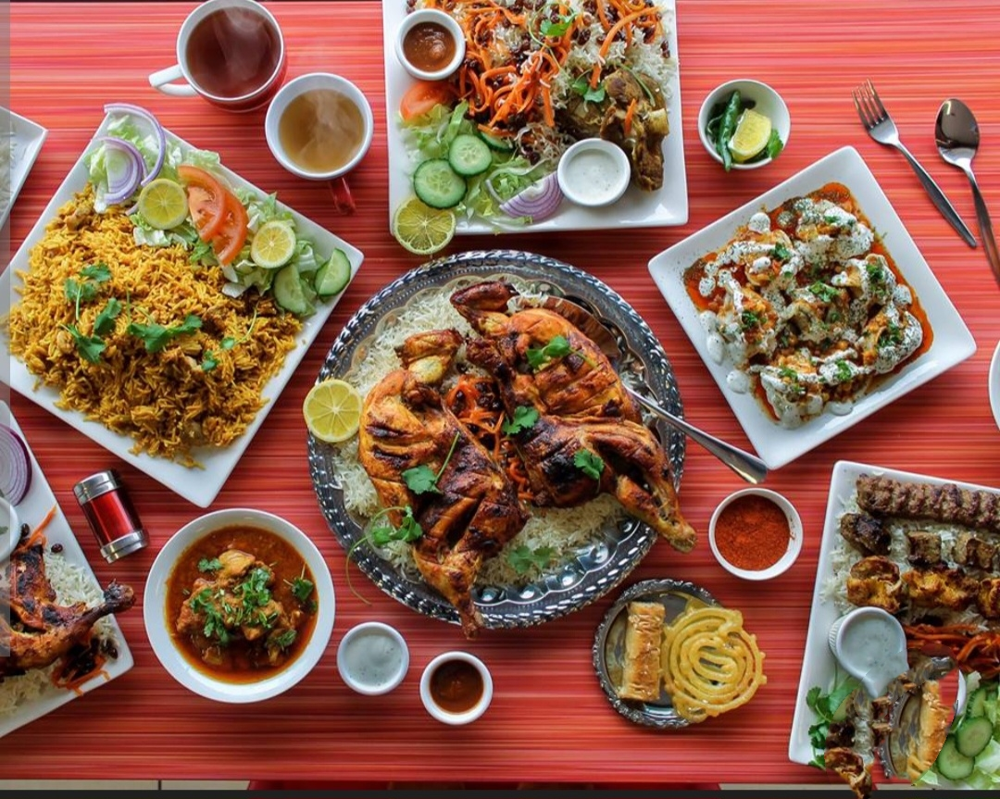
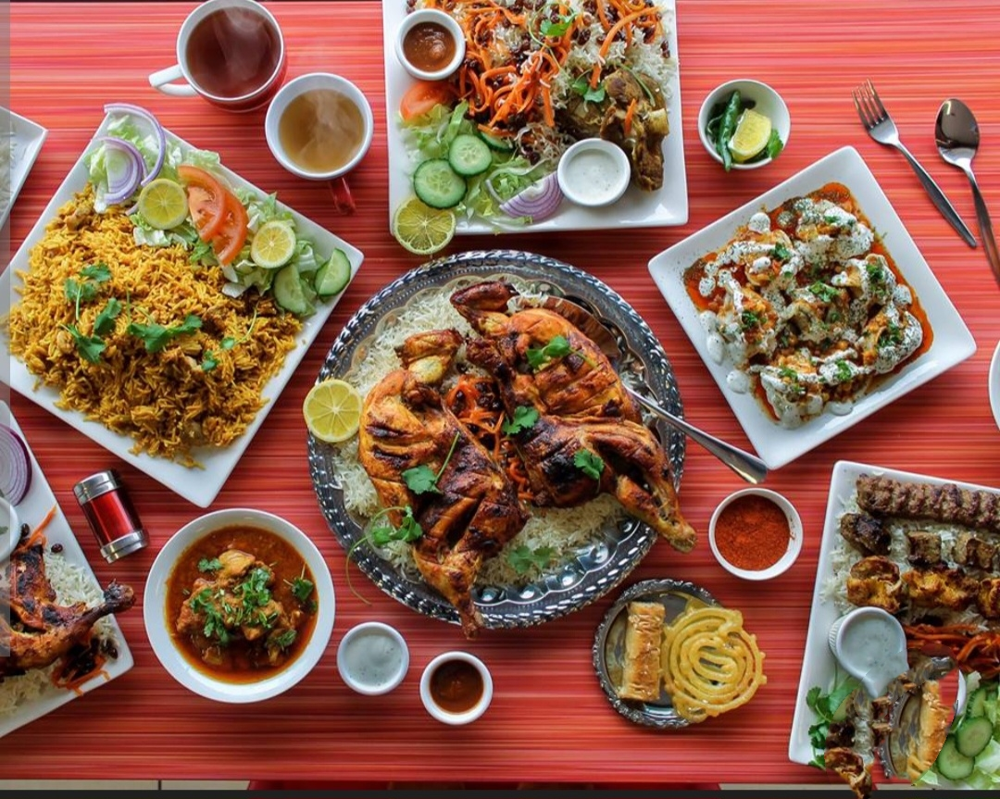

.jpg)
لباس محلی افغانستان یکی از زیباترین جلوههای فرهنگی این سرزمین است که تنوع، رنگ، و اصالت را در خود جای داده. در هر ولایت، لباس سنتی با ویژگیهای خاص خودش دیده میشود که نشاندهندهی تاریخ و هویت آن منطقه است. لباسهای زنانه معمولا رنگارنگ و پر از گلدوزی، آینهدوزی، منجوقدوزی و طرحهای سنتی هستند. زنان اغلب پیراهنهایی بلند با شلوارهای گشاد میپوشند که همراه با روسری یا چادر تکمیل میشود. در مناطق مرکزی مانند بامیان و دایکندی، لباسها بیشتر از رنگهای ملایم و روشن استفاده میکنند. در جنوب افغانستان، لباسها پررنگتر و دارای نقشهای سنتی بیشتری هستند. لباس مردانه نیز متشکل از پیراهن بلند، تنبان (شلوار گشاد)، واسکت (جلیقه) و چپان (پوشش رویی) است. چپان یکی از نمادهای شناختهشدهی لباس مردانه در افغانستان است که در زمستان کاربرد زیادی دارد. مردان افغان همچنین از کلاههایی مثل پکول، لنگی و قراقلی استفاده میکنند. کلاه قراقلی بیشتر در میان مردم کابل و برخی رهبران سیاسی رایج است. لباس محلی فقط پوشش نیست، بلکه روایتگر داستان مردم، هنر، باورها و تاریخ افغانستان است. در عروسیها و جشنها، لباسها مجللتر، پرکارتر و تزیینشدهتر میشوند. لباس عروس اغلب به رنگهای سرخ یا سبز است و با زیورآلات سنتی تکمیل میشود. در میان مردم هزاره، تاجهای سنتی با سنگهای رنگی روی سر عروس قرار میگیرد. در فرهنگ پشتون، زنان لباسهایی با دامنهای چیندار و سکهدوزی میپوشند. لباس ازبکها و ترکمنها دارای نقشهای هندسی و دوختهای خاص خودشان است. لباسهای محلی نسل به نسل منتقل شده و هنوز هم در روستاها و میان مردم با افتخار پوشیده میشود. در سالهای اخیر، طراحان افغان سعی کردهاند لباسهای سنتی را با سبک مدرن ترکیب کنند. این تلاشها باعث شده تا لباسهای محلی در نمایشگاههای بینالمللی نیز توجه زیادی جلب کنند. لباس محلی افغانستان نماد زیبایی، هویت و ریشههای عمیق فرهنگی این کشور است
 

غذاهای افغانستان نمایندهای از تنوع قومی، فرهنگی و جغرافیایی این کشور هستند. آشپزی افغان ترکیبی از طعمهای آسیای میانه، خاورمیانه و جنوب آسیا است. یکی از معروفترین غذاهای افغانستان، قابلی پلو است؛ برنجی خوشعطر با کشمش، هویج، گوشت و ادویه. منتو، نوعی دامپلینگ بخارپز شده با گوشت چرخکرده، یکی دیگر از غذاهای محبوب است. آشک نیز شبیه منتو است، اما داخل آن سبزیجات قرار دارد و با ماست و سس گوشت سرو میشود. در مناطق مرکزی، خورشت بامیه و سبزی با برنج یا نان خورده میشود. بولانی نان نازک پرشده با سیبزمینی، تره یا کدو است که سرخ میشود و اغلب در مهمانیها سرو میگردد. کبابها جایگاه ویژهای دارند، بهخصوص کباب گوسفندی و مرغ که معمولاً در فضای باز پخته میشوند. شوروا نوعی سوپ غنی از گوشت، سیبزمینی و سبزیجات است که در زمستان بسیار محبوب است. کشک و دوغ از نوشیدنیهای سنتی هستند که در تابستانها خنککننده و مفیدند. چای سبز یا سیاه همیشه همراه غذا یا بعد از آن خورده میشود و بخشی از فرهنگ روزانه مردم است. کلوچههای خانگی، حلواها و زردک از دسرهای سنتی خوشطعم افغانها هستند. در مهمانیها، برنج با کشمش و بادام و مرغ بریانشده بسیار رایج است. مردم افغانستان در پخت غذا دقت و عشق زیادی به خرج میدهند، و غذا را با خانواده تقسیم میکنند. پختن غذا اغلب زمانبر است، اما نتیجه آن همیشه ارزشمند و لذتبخش است. در روستاها، پخت غذا هنوز هم بهصورت سنتی با تنور و آتش انجام میشود. غذاهای محلی هر ولایت با ویژگیهای خاص همان منطقه پخته میشوند. مثلاً در هرات، غذاها بیشتر تند و پرادویهاند، در حالی که در بامیان سادهتر و گیاهیتر هستند. غذا در فرهنگ افغان فقط برای خوردن نیست، بلکه نماد مهماننوازی، عشق و اتحاد است. آشپزی افغان، همچون موسیقی و لباس، بخشی از روح این کشور است که باید حفظ شود
.jpg)
افغانستان کشوری با طبیعتی بکر و دستنخورده است. این سرزمین دارای چهار فصل متفاوت است که هر کدام زیباییهای خاص خود را دارند. در بهار، دشتها و کوهپایهها پر از گلهای رنگارنگ میشوند. تابستان در مناطق کوهستانی خنک و دلپذیر است، بهویژه در ولایتهایی مثل بامیان و پنجشیر. پاییز با رنگهای زرد و نارنجی برگها، مناظر دلانگیزی را خلق میکند. زمستانها نیز با برفپوش شدن کوهها جلوهای از سکوت و آرامش دارد. افغانستان دارای رودخانهها، دریاچهها، جنگلها، و کوههای بلندی چون هندوکش است. بند امیر نخستین پارک ملی افغانستان با دریاچههای آبی شفافش، یکی از جواهرهای طبیعت این کشور است. دره پنجشیر، با رود و کوههای سرسبز، بهشتی برای کوهنوردان و عکاسان است. نورستان با جنگلهای انبوه و رودخانههای جاری، یکی از سبزترین مناطق کشور به شمار میرود. در شمال، دشتهای وسیع با مزارع گندم و شالی دیده میشود. در جنوب، تپههای شنی و بیابانها با طبیعت متفاوت خود، زیبایی خاصی دارند. پرندگان مهاجر، حیوانات وحشی و گونههای نادر گیاهی در طبیعت افغانستان یافت میشوند. این کشور با وجود چالشها، طبیعتی غنی و متنوع دارد. هر گوشهای از آن میتواند مقصدی رویایی برای طبیعتگردی باشد. مردم افغانستان نیز با طبیعت خود پیوندی عمیق دارند. زندگی روستایی، کشاورزی و دامداری بخشی از فرهنگ طبیعی این مردم است. حفاظت از محیط زیست در افغانستان اهمیت زیادی دارد، هرچند نیاز به توجه بیشتر دارد. اگر روزی صلح و امنیت برقرار شود، طبیعت افغانستان میتواند گردشگران زیادی را جذب کند. زیبایی طبیعت افغانستان، نشان از روح زنده و اصالت این سرزمین دارد.